population c. 400,000

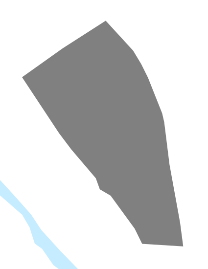
Babylon, 500 BCE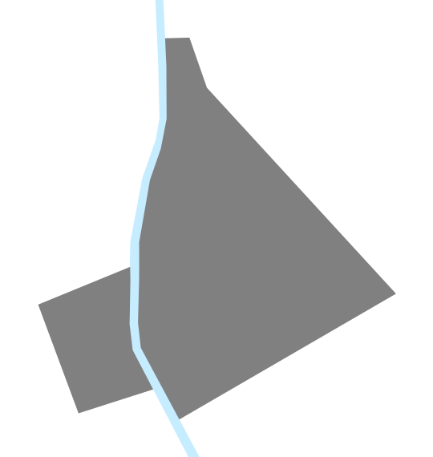
Athens, 350 BCE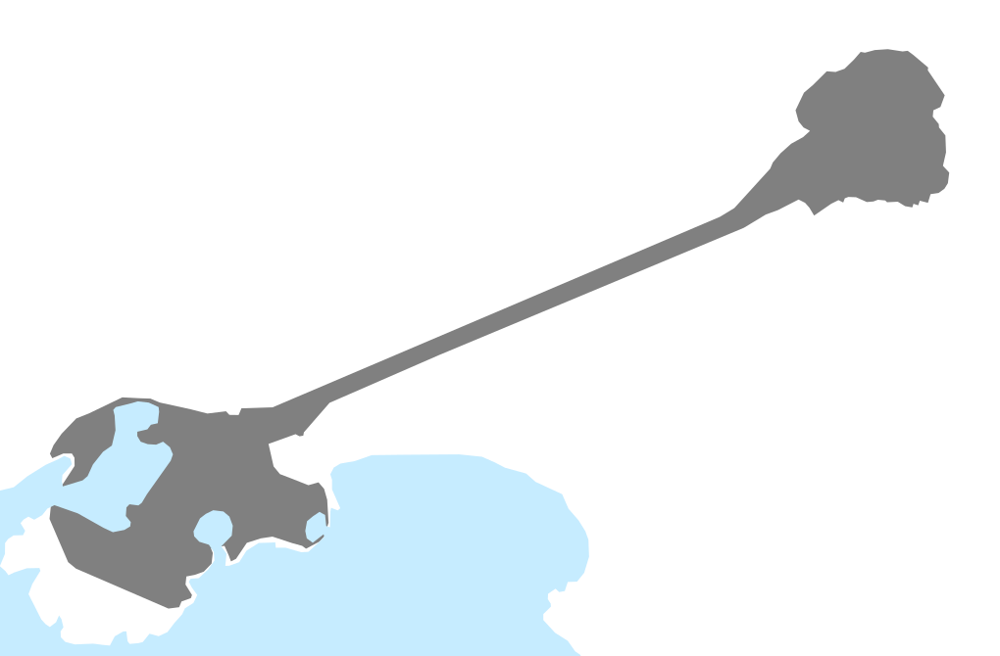
Rome, 200 BCE
Chang'an, 100 BCE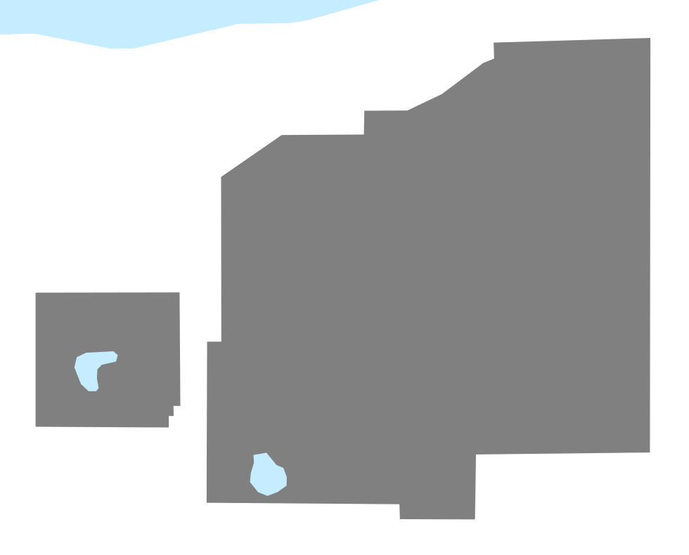
Jerusalem, 50 CE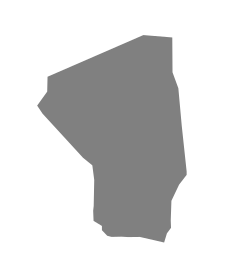
Luoyang, 100 CE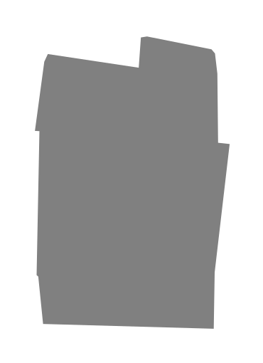
Rome, 300 CE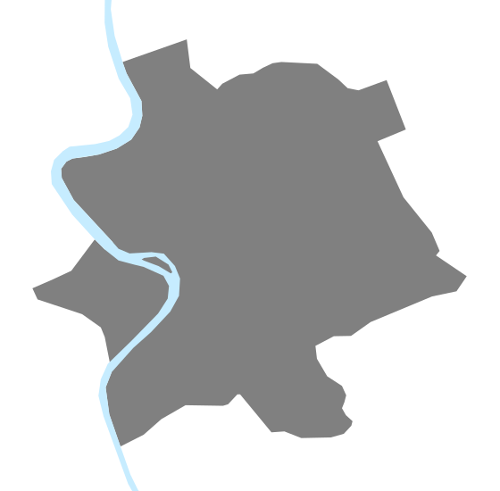
Constantinople, 500 CE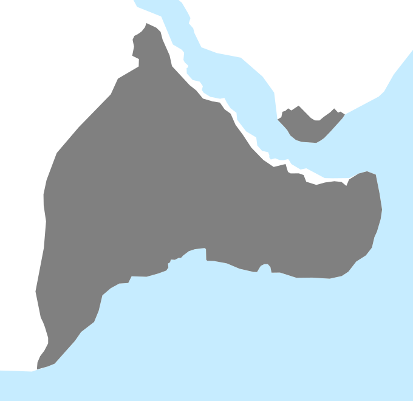
Chang'an, 750 CE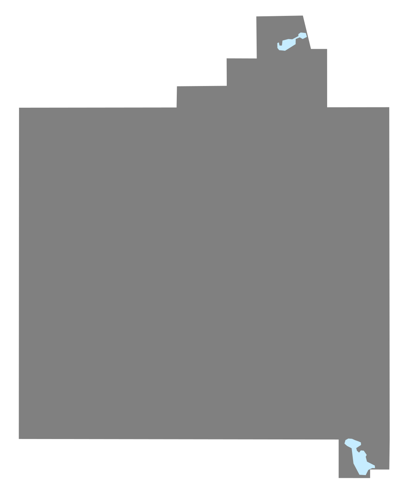
Kaifeng, 1000 CE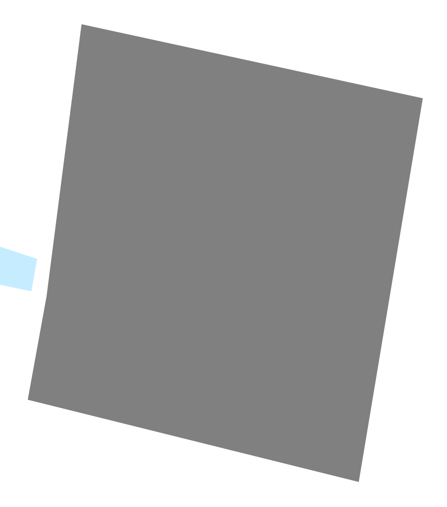
Cordoba, 1100 CE Merv, 1150 CE
Merv, 1150 CE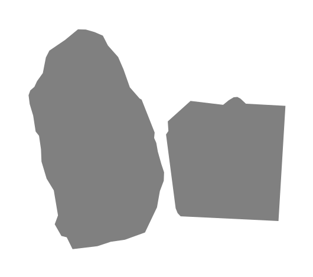
Cairo, 1250 CE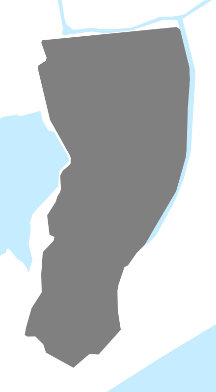
London, 1250 CE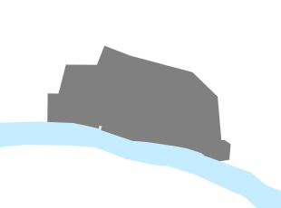
Milan, 1250 CE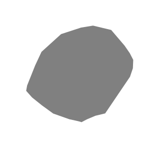
Paris, 1250 CE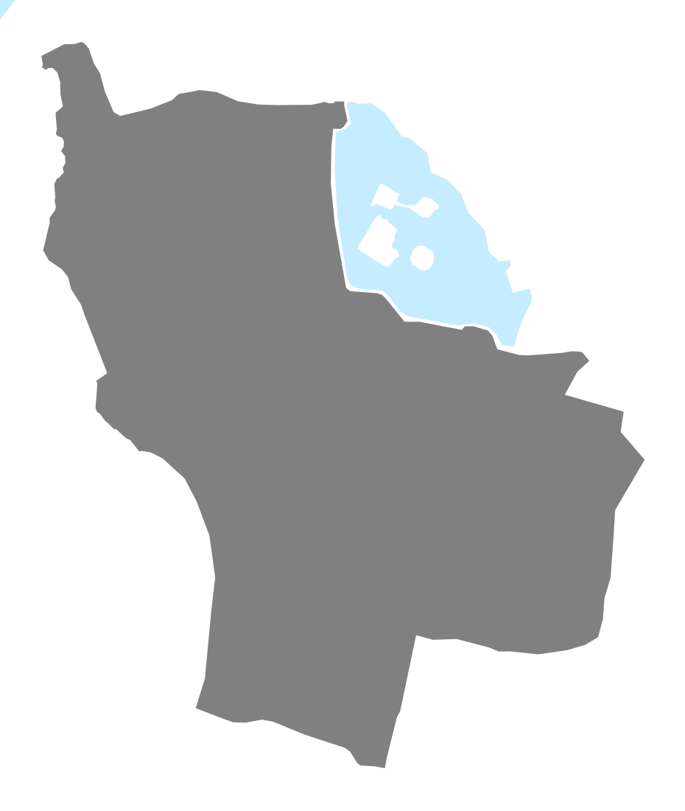
Granada, 1450 CE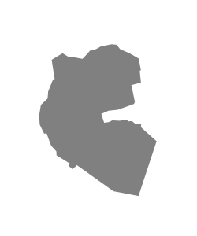
Beijing, 1500 CE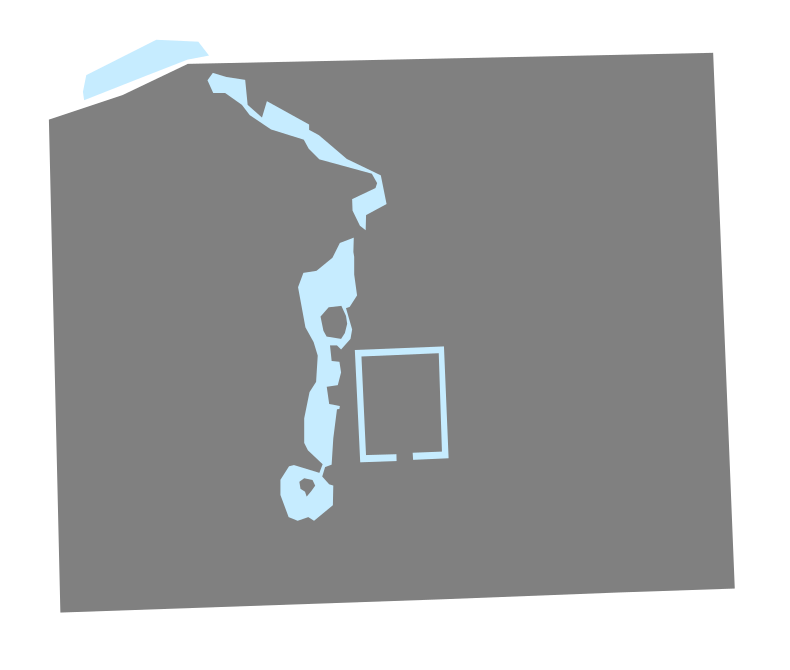
Fez, 1500 CE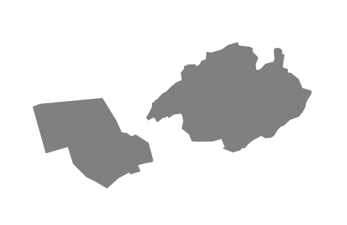
Florence, 1500 CE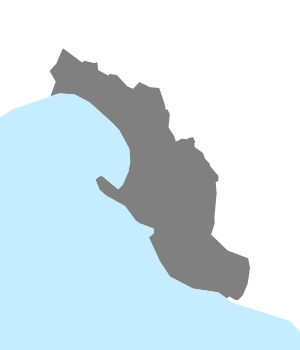
Lisbon, 1500 CE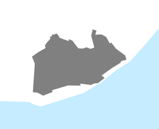
Naples, 1500 CE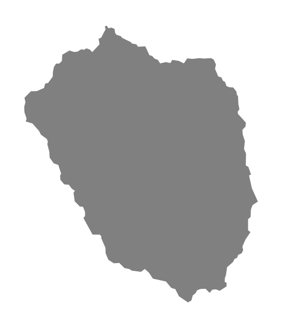
Seville, 1500 CE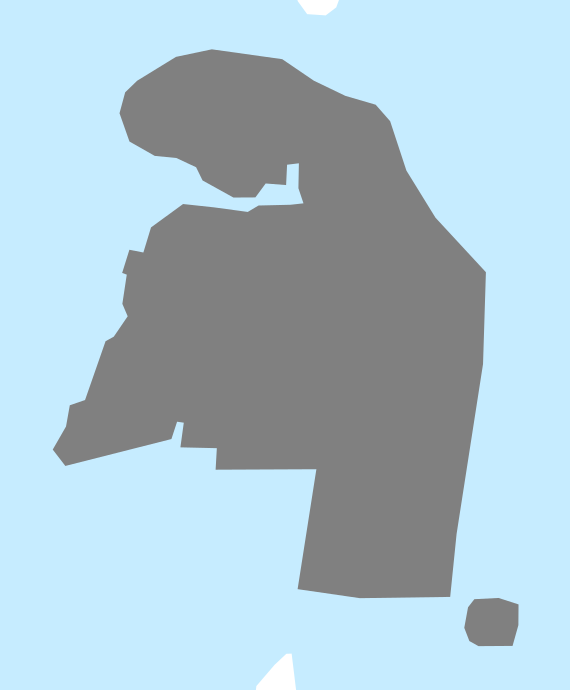
Venice, 1500 CE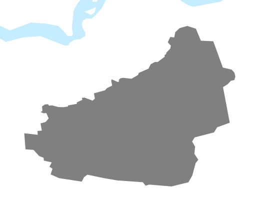
Moscow, 1600 CE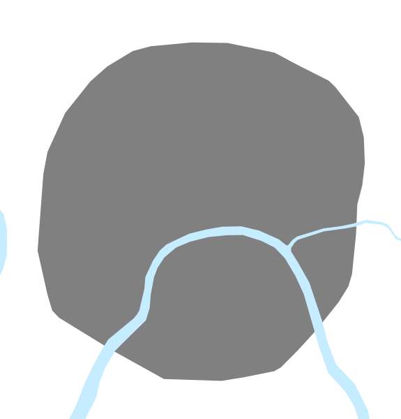
Beijing, 1750 CE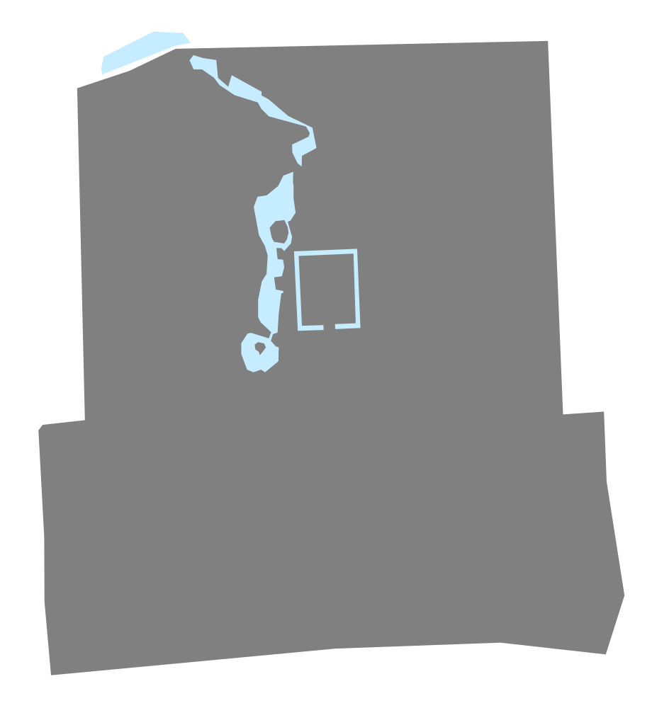
versions with modern rapid transit lines overlaid (where applicable)
show all hide all
Scale: = 1 km (60 CSS pixels per km)
Population estimates extremely approximate, and include residents of contiguous urban areas outside the walls (which vary from 0% to 30% of the population for the maps shown). Please send any corrections or questions to threestationsquare at gmail dot com.
See also: rapid transit timelines - miscellaneous timelines and maps